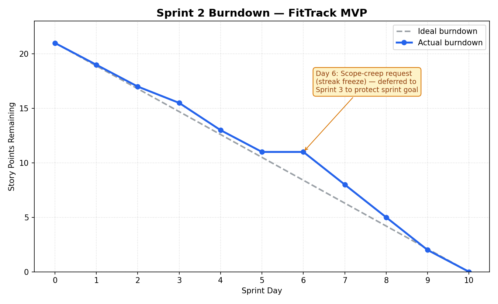

A mid-sprint stakeholder request added 8 story points to Sprint 2. The chart makes the jump visible straight away, and the recovery plan brought the sprint back under control without breaking the sprint goal.
The chart is generated by a Python script, so the data and annotations are reproducible rather than a static image: generate_burndown_chart.py.